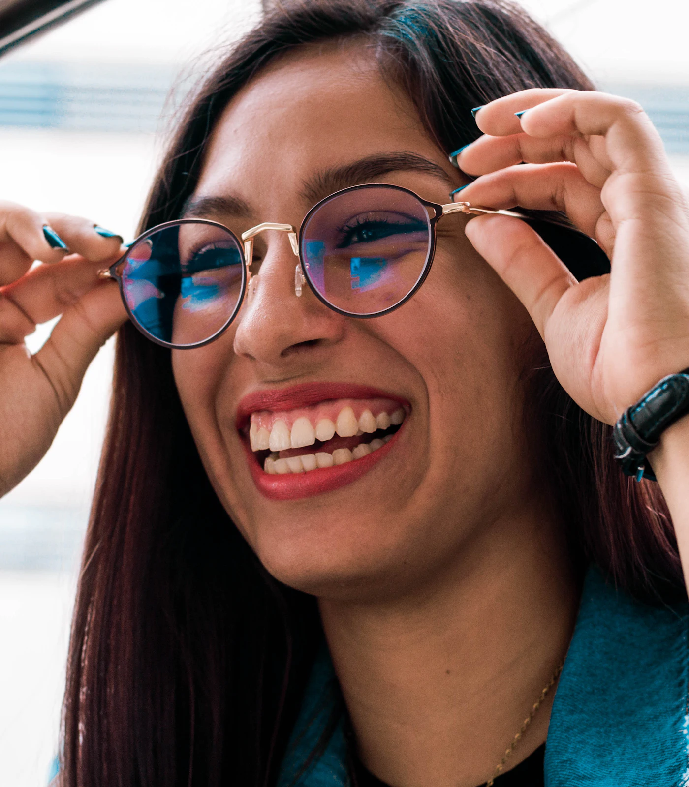
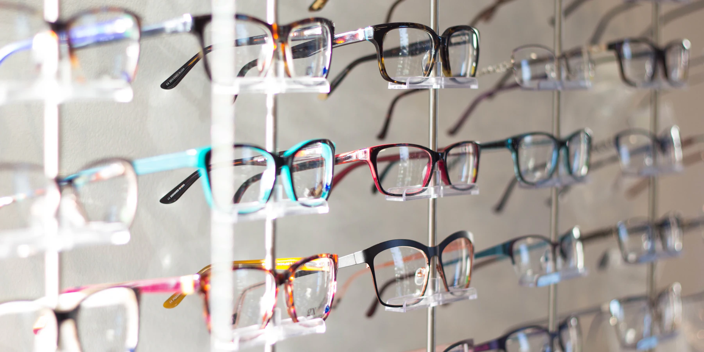
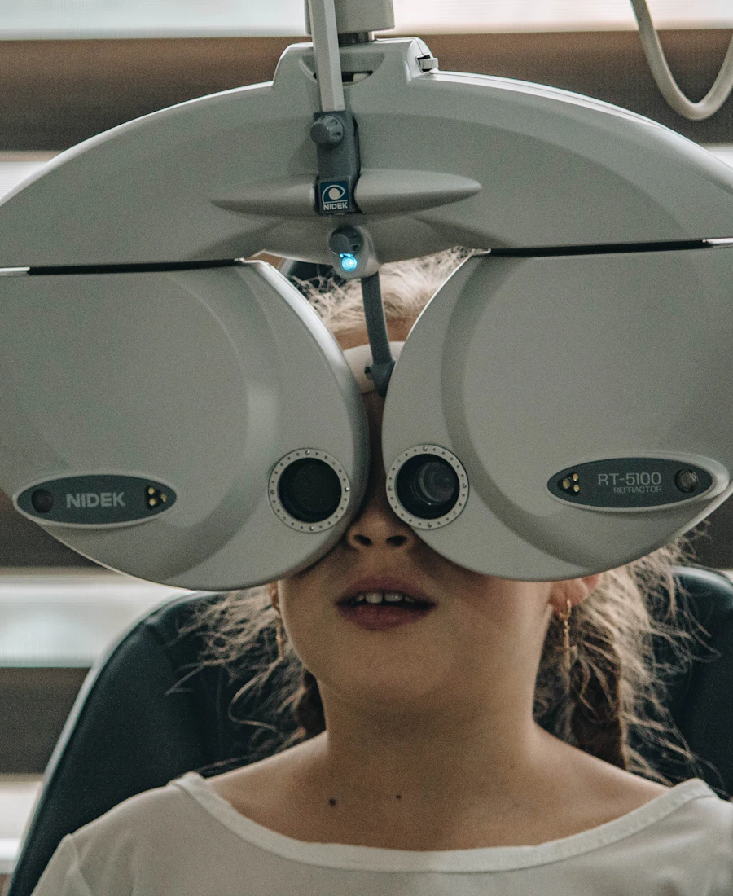
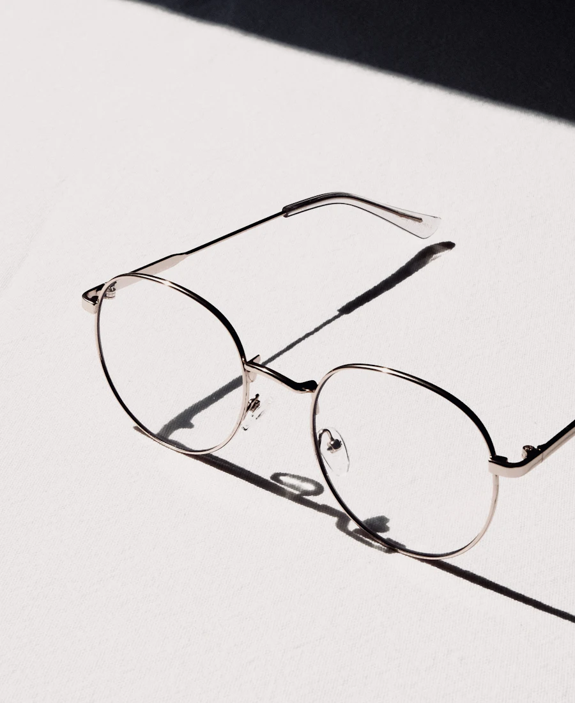
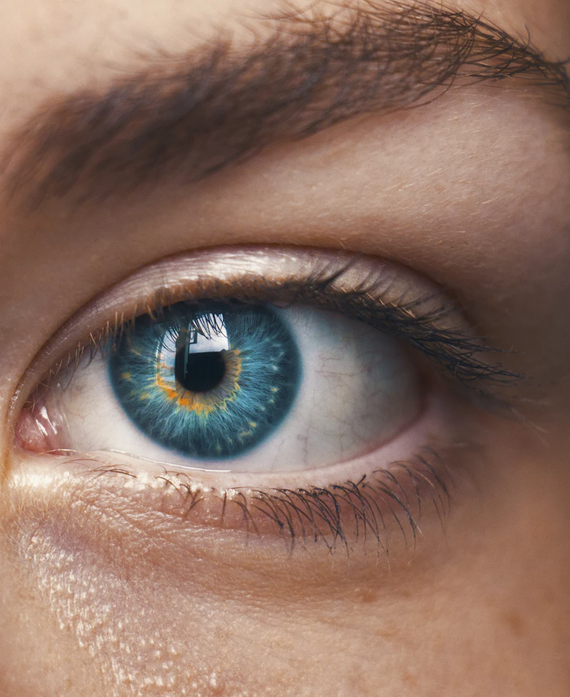
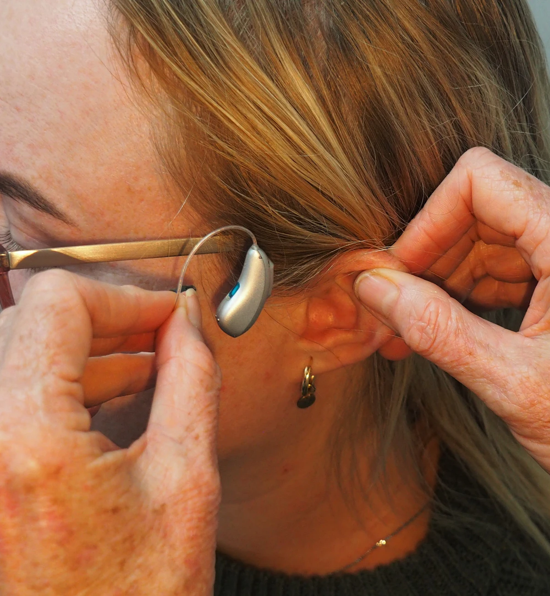
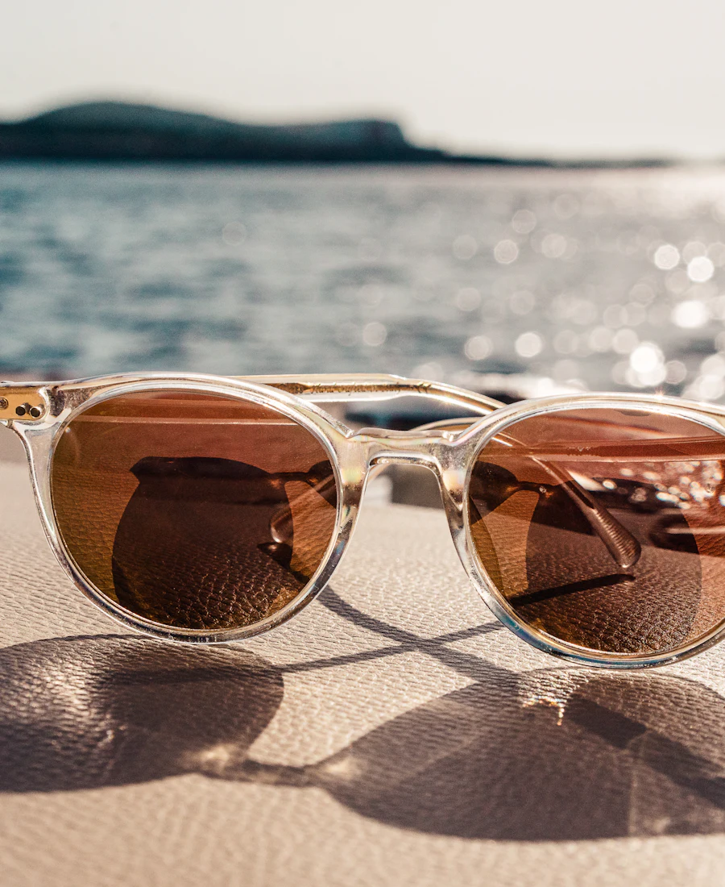
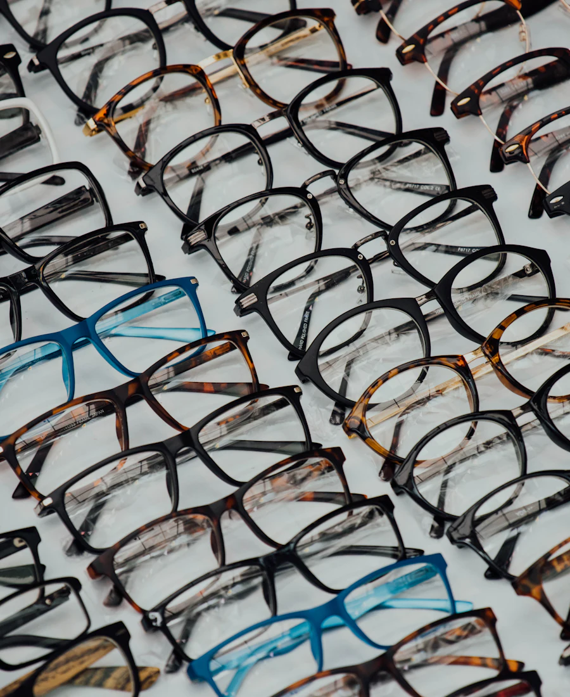

Avenida
Puente 9
★★★★★ 4,9 · 34 reseñas
Hoy[horario de la tienda]
Albox · Huércal-Overa · Desde 1980
Óptica Almería son tres ópticas en Albox y Huércal-Overa. Revisión de la vista con óptico-optometrista, progresivos Varilux y audífonos con audiometría en cabina insonorizada.


La gafa buena es la que te olvidas de que llevas puesta.
Nuestras tiendas
Cada tienda con su página, su horario y su ficha de Google. Llama, escribe o pide cita en la tuya.
★★★★★ 4,9 · 34 reseñas
Hoy[horario de la tienda]
★★★★★ 4,9 · 26 reseñas
Hoy[horario de la tienda]
★★★★★ 5,0 · 1 reseña
Hoy[horario de la tienda]
Servicios
Cada servicio tiene su página: qué es, cómo es la cita, en qué tienda se hace y las preguntas de siempre.

→Miopía, hipermetropía, astigmatismo y vista cansada, con óptico-optometrista.

→Centro especialista desde el año 2000. Adaptación y seguimiento hasta que veas cómodo.

→Adaptación, revisión y cómo llevarlas cómodas todo el día.

→Audiometría en cabina insonorizada, videotoscopia y audífonos a medida.

→Graduadas o no, con la protección que de verdad pide el sol de Almería.

→Monturas de primeras marcas, de las clásicas a las más atrevidas.
Salud auditiva · Albox y Guillermo Reyna
Es una de las primeras señales de pérdida auditiva. Te hacemos una valoración completa, sin prisas y explicada.
Quiénes somos
Óptica Almería nació en Albox en 1980. Hoy somos tres ópticas en Albox y Huércal-Overa y centro Varilux especialista desde el año 2000. Nos conoce la gente del pueblo, y eso se nota en cómo atendemos: con tiempo y explicando cada cosa.
Aquí va el equipo con nombre, foto y número de colegiado. En temas de salud, Google y los asistentes de IA miran mucho quién está detrás.
Preguntas frecuentes
Las del mostrador. Son las que Google y ChatGPT recogen para responder.
En Óptica Almería, Avenida Puente 9. La hace un óptico-optometrista. Pide cita en el 950 43 00 12.
La de la Avenida Guillermo Reyna 16, con cabina insonorizada y videotoscopia. Cita en el 950 13 41 99.
Lo normal son unos días. Como centro Varilux especialista, te hacemos el seguimiento hasta que veas cómodo a todas las distancias.
Aquí va la respuesta de la casa, en texto y con el precio si queréis enseñarlo.
El blog de Carmen
Firmado con su nombre. Lo más personal de la web y lo que ninguna cadena puede copiar.
Pedir cita
Esta página es un prototipo sobre la misma WordPress y las mismas direcciones. Cada decisión tiene su motivo.